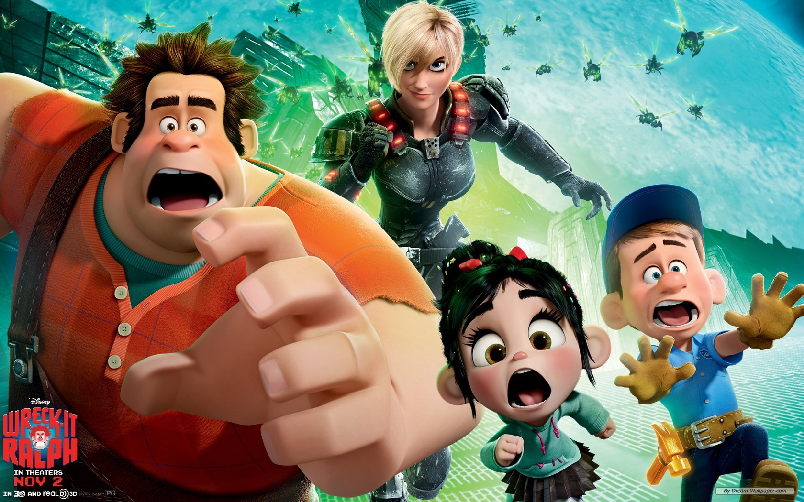

¡Rompe Ralph!90% de coincidencia 1 h 39 minWreck-It Ralph (John C. Reilly), personaje de un juego de arcade, está cansado de siempre ser el "chico malo" y perder ante su oponente el "chico bueno", Fix-It Felix (Jack McBrayer).REPRODUCIRTRAILERProtagonistas: Sarah Silverman, Jack Mcgra, Eddie Redmay. Genero: Infantil.
 TRAILER
TRAILER